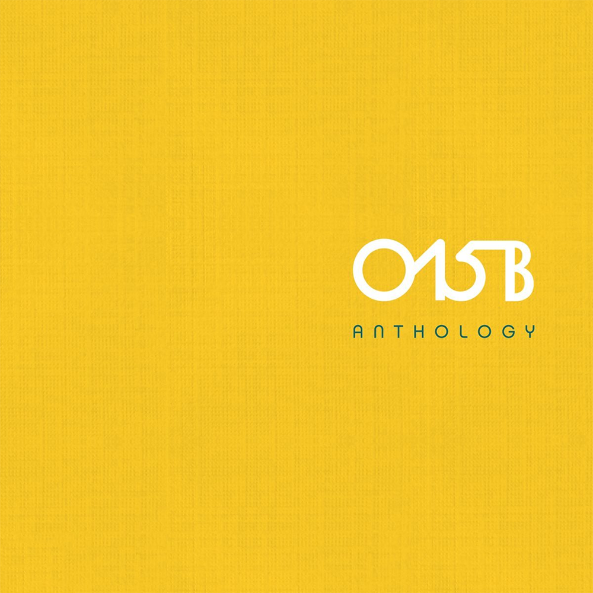

안녕하세요 라보엠입니다. 모두들 설연휴 잘 보내세요 ^^
오늘은 015B 공일오비의 리메이크 앨범 Anthology (2018) 에 실린 어디선가 나의 노랠 듣고 있을 너에게를 소개해드리겠습니다. 공일오비의 멤버는 정석원, 장호일이지만 노래는 객원 보컬 방식으로 앨범을 발표하며, 윤종신 비롯한 많은 가수들이 공일오비의 앨범에 참여했었습니다.이 노래는 공일오비의 4집 앨범에서 이장우가 불렀던 노래로 리메이크 앨범에서는 심규선이 다시 불렀습니다. 원곡도 좋지만 심규선의 목소리가 너무 이 노래에게 착 감겨서 이 버젼을 더 많이 듣습니다. 공일오비의 노래는 왠지 세기말의 분위기가 느껴질 때가 있는데, 이 노래에서도 약간 그런 느낌이 드는데, 슬픈 감정이 세상의 끝이 온 것 같은 느낌이 들 때가 있죠 그런게 아닌가 싶습니다. 슬프면서도 아름다운 노래입니다.
공일오비 어디선가 나의 노랠 듣고 있을 너에게 Lyrics MV
Release Note
015B Anthology의 다섯 번째 곡 어디선가 나의 노랠 듣고 있을 너에게는 93년 발표된 015B의 4집 The Fourth Movement에 수록된 곡으로 원곡은 이장우가 가창하였다.
015B의 발라드 중 가장 사랑받는 곡 중 하나이며, 이번 리메이크 프로젝트 앨범 015B Anthology에서 유일하게 여자 솔로 가수가 가창한 곡이기도 하다.
다섯 번째 가창자 심규선(Lucia)은 대중들의 마음을 위로하는 목소리를 가진 힐링 보컬의 여왕으로 리메이크곡 녹음 당시 뛰어난 가창력과 감성으로 모든 관계자 놀라게 하며, 색다른 느낌의 ‘어디선가 나의 노랠 듣고 있을 너에게’로 탈바꿈시켰다.
Credits
Composed by 정석원
Lyrics by 정석원
Arranged by 정석원
Piano & Keyboards by 정석원
Drums Programming by 정석원
Acoustic & Electric Guitars by 장호일
Bass by 김진환
Vocals by 심규선 (Lucia)
Recorded by 김영식 at Mojo Sound
Mixed by 김영식 at Mojo Sound
Mastered by 성지훈 at JFS Mastering
#015B #심규선 #어디선가나의노랠듣고있을너에게
#공일오비 #LUCIA #015bAnthologyPart5
어디선가 나의 노랠 듣고 있을 너에게 가사
- 015B, 심규선 (Lucia)
1.
어디선가 듣고는 있니 너만을 위해
불러왔던 나의 그 노래들을
어떨까 너의 기분은 정말 미안해
어쩌면 나처럼 울고 있겠지
삶이 끝날 때까지 널 만날 순 없지만
내 버려진 약속 간직하고 싶어
난 이대로 계속 서 있을게 긴 긴 한숨 속에
조금은 힘들지만 꿈속에선 볼 수 있잖아
넌 모른 척 그대로 살아가 너의 눈물까지
내가 다 흘려 줄게 이런 나의 맘 헤아려만 줘
2.
내가 숨 쉴 때까지 널 잊을 순 없지만
너만이라도 행복하게 살아줘
난 이대로 계속 서 있을게 긴 긴 한숨 속에
조금은 힘들지만 꿈속에선 볼 수 있잖아
넌 모른 척 그대로 살아가 너의 눈물까지
내가 다 흘려줄게 이런 나의 맘 헤아려만
난 이대로 계속 서 있을게 긴 긴 한숨 속에
조금은 힘들지만 꿈속에선 볼 수 있잖아
넌 모른 척 그대로 살아가 너의 눈물까지
내가 다 흘려 줄게 이런 나의 맘 헤아려만 줘
